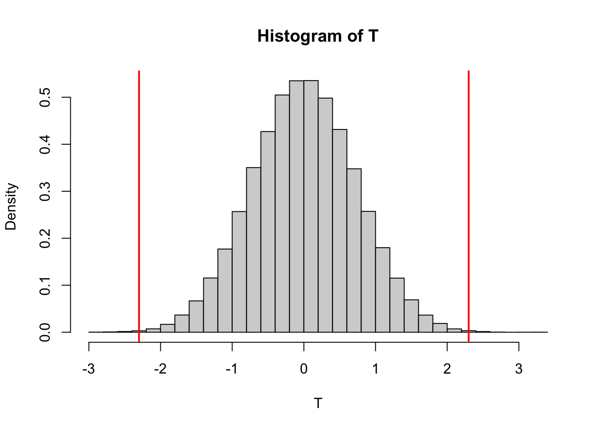
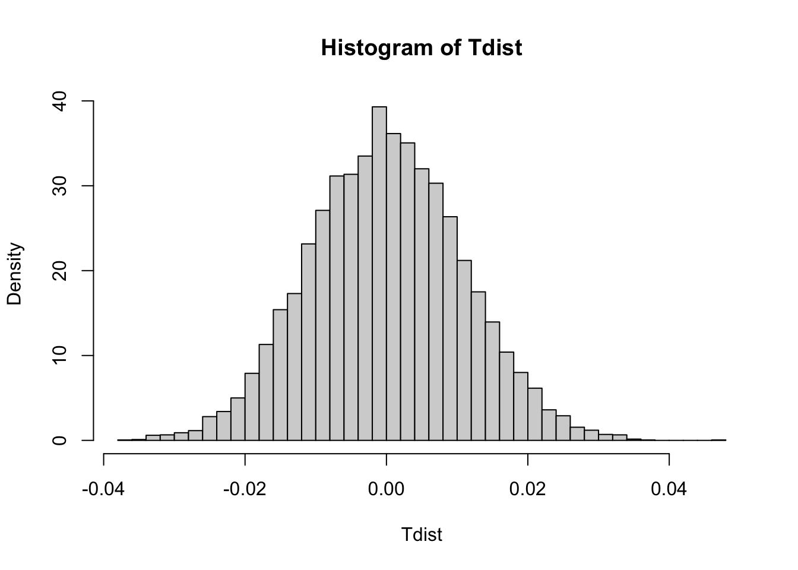
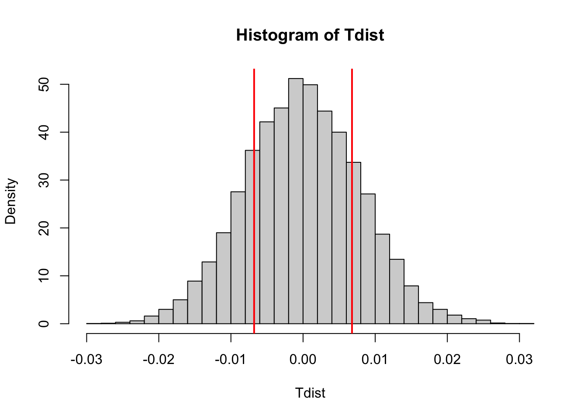

This section will be a very quick introduction to the idea of hypothesis testing.
When most mathematicians think of mathematics, they think of theorems and proofs. For instance:
Theorem: The sum of two even numbers is even.
Proof: Let \(a\) and \(b\) be two even numbers. A number \(c\) is even if and only if it can be written as \(c = 2\cdot c_1\), where \(c_1\) is an integer. Then \(a = 2\cdot a_1\) and \(b = 2 \cdot b_1\). Their sum is then
\[a+b = 2\cdot a_1+2\cdot b_1 = 2( a_1+ b_1 ).\]
Since \(a_1 + b_1\) is an integer, \(a+b\) is equal to an integer multiplied by 2, and so \(a+b\) must be even. Q.E.D.
A mathematical proof leaves no room for debate. If your reasoning is
correct, then there’s no talk of probably' ormostly’ right.
Statistical analysis, on the other hand, doesn’t provide such comfort.
Here’s a comparison between the disciplines:
Math: State a theorem
Statistics: State a hypothesis
Math: Prove theorem (provide an argument) or disprove theorem (provide a counterexample)
Statistics: Run a hypothesis test and make a statistical statement about how likely your hypothesis is.
The hypothesis test is the statistician’s way of proving by contradiction. A proof by contradiction has the following structure
If you haven’t seen a proof by contradiction, here’s a simple example.
Theorem: The is no largest integer.
Proof: Assume there is in fact a largest integer. Call it \(N\). Let \(\tilde N = N+1\). Then \(\tilde N\) is certainly an integer, but \(\tilde N >N\), so \(N\) cannot, in fact, be the largest integer. This is in contradiction to the original statement that \(N\) was the largest integer. Therefore there is no largest integer. Q.E.D.
You’ve likely engaged in these tactics yourself during arguments. It was likely peppered with sarcasm (e.g. “Fine! You didn’t eat all of the lasagna. But it seems pretty unlikely to me that your shirt would be covered in cheese and marinara like it is now!”)
Where are we going with this? In statistics, the structure of a hypothesis test is the following:
If your \(p\)-value is tiny, then that means that it would be very unlikely that your data was found if \(H_0\) was true. In other words, you’ve got good evidence to reject the null hypothesis, and accept the alternative, which is what you were trying to show in the first place.
Here’s an illustrative example that goes through the hypothesis testing steps. Your job is to decide whether a coin is fair.
Alternative hypothesis \(H_1\): The coin is biased (\(p \neq .5\))
We assume the null hypothesis, this is the opposite of
\(H_1\), meaning that \(H_0\) must be the the coin has one heads
and one tails.
Suppose we flip the coin 10 times, and obtain 9 heads. Under the null hypothesis, what is the probability of this or something at least as extreme happening? In our case, outcomes that are at least as extreme are 9 heads, 10 heads, and also the outcomes of 9 tails or 10 tails. Assuming the null hypothesis is true, the probability of one these things happening is
\[p_{val} = \mathbb P(9 H \hbox{ or } 10 H \hbox{ or } 9 T \hbox{ or } 10T |H_0). \]
This can be computed exactly with the binomial distribution (use
<
The quantity \(p_{val}\) that we have calculated gives the frequency of obtaining a result as bad or worse if the null hypothesis is true. So if, in fact, our flip is fair, then we would only produce such an absurd result (or worse) about 2% of the time. At this level, there’s pretty good reason to suspect that the coin isn’t fair. The lower the \(p\)-value, the more confidence we have to reject the null hypothesis.
Centersworth potato chips have changed the recipe to their barbecue potato chips. A focus group has been hired to assess whether the new recipe is more popular than their old one. Two groups of thirty people are given potato chips. Group A is given the original recipe, and group B is given the new recipe. This is a `blind’ taste test–participants are blindfolded, and have no idea which recipe they are testing. Each participant is asked to rate the chip’s flavor on a scale from 1 to 10 (no fractional scores allowed). Here are the results:
A = c(6 ,8 ,7 ,8 , 9 , 7 ,10 , 4 ,4, 10, 9 , 7 , 2 , 7 ,5 ,10 , 8 ,
7 ,10 , 5 , 5 , 7 ,3 ,7 , 7 , 9 , 8 ,
8 , 8 , 9)
B = c(2 , 5, 7 ,10 , 4 ,3 , 8 , 4, 6, 7 , 6 , 1 ,5 ,6 ,1 , 1 ,9 ,6
, 2 ,1 ,1 ,10 ,7 ,10 , 8 ,4 ,3 , 1 , 2 , 5)Of course, the main question is
Is the new recipe better than the old one?". This is equivalent to asking,Are
the scores for group B higher than group A”.
Let’s first calculate the average value of each group’s score.
xbarA = mean(A)
xbarB = mean(B)\[\begin{equation} H_1: \mu_B \neq \mu_A \end{equation}\]
This null hypothesis is then the opposite of this statement: \[\begin{equation} H_0: \mu_B = \mu_A \end{equation}\]
Here’s the gist of statistical testing. If you have some quantifiable claim (Pepsi scores better than Coke in taste tests, men are taller than women, my coin flips more heads than tails), a statistical test will assume the opposite claim (Pepsi and Coke taste the same, men and women are the same height, my coin is fair). This is the null hypothesis. The statistical test uses this assumption and then gathers evidence to declare the null hypothesis ridiculous. The \(p\)-value measures how ridiculous the null hypothesis is. The lower the \(p\) value, the lower the chances that your null hypothesis is true.
So in our world of chip tasting, our original claim is the chips taste different. To show that there is good evidence that our claim is true, we focus on the null hypothesis \(H_0\) that chips are the same. The beauty of statistical hypothesis testing is that often assuming the null hypothesis allows us to make bold statements about the data.
Tnaught = mean(A)-mean(B)
Tnaught## [1] 2.3If \(\bar X_{\mathrm{diff}} \neq 0\), is this proof that \(\mu_A\) and \(\mu_B\) must be different? Not at all! We know from experience that flipping a fair coin 100 times is rarely going to result in exactly 50 heads and 50 tails. How, then, can we show that the averages of the two groups are really different? Our answer depends on showing whether our value of \(\bar X_{\mathrm{diff}}\) is exceptionally different from 0 if \(H_0\) were true.
So let’s get started. In our case, if potato chips from group A and B are just as good, then the distributions of scores ought to be about the same for any old combinations of people in $A $and \(B\). So, again stressing that we’re assuming that there’s no difference between A and B, let’s mush the responses into a length 60 vector
C = c(A,B)In our simple world of assuming the null hypothesis, C gives 60 samples of how Centersworth’s chips taste like. Let’s pick two random groups of 30, and compare their averages. Here’s the main code for generating a single permutation
Randomly shuffle C
Cperm = sample(C)Let first thirty entries be in group A, and second thirty in group B
Aperm = Cperm[1:30]
Bperm = Cperm[31:60]What’s the difference of means between these two groups? This is the test statistic
permdiff = mean(Aperm)-mean(Bperm)
permdiff## [1] 0.9#Now let’s do this many times
samps = 100000
Tdist = rep(0, samps)
for (j in 1:samps){
Cperm = sample(C)
Aperm = Cperm[1:30]
Bperm = Cperm[31:60]
T[j] = mean(Aperm)-mean(Bperm)
}
hist(T, breaks = 30, freq = FALSE)
abline(v = Tnaught, col = 'red', lwd = 2)
abline(v = -Tnaught, col = 'red', lwd = 2)
#Computing p-value
pval = sum(abs(T)>=abs(Tnaught) )/samps
pval## [1] 0.00154Q: How many permutations are available in our dataset? Can you ever hope to generate all the permutations?
Let’s run the permutation test on some obvious cases. First, let’s look at a case where we should expect a very low p-value
#For different distributions: the p value should be small
A = runif(10000, 6, 8)
B = runif(10000, 7, 9)
C = c(A,B)
Tnaught = mean(A)-mean(B)
print(Tnaught)## [1] -1.008535samps = 10000
Tdist = rep(0, samps)
for (j in 1:samps){
Cperm = sample(C)
Aperm = Cperm[1:10000]
Bperm = Cperm[10001:20000]
Tdist[j] = mean(Aperm)-mean(Bperm)
}
hist(Tdist, breaks = 30, freq = FALSE)
abline(v = Tnaught, col = 'red', lwd = 2)
abline(v = -Tnaught, col = 'red', lwd = 2)
pval = sum(abs(Tdist) >= abs(Tnaught) )/samps
pval## [1] 0#For identical distributions: the p value shouldn't always be small
A = runif(10000, 8, 10)
B = runif(10000, 8, 10)
C = c(A,B)
Tnaught = mean(A)-mean(B)
print(Tnaught)## [1] -0.006785326samps = 10000
Tdist = rep(0, samps)
for (j in 1:samps){
Cperm = sample(C)
Aperm = Cperm[1:10000]
Bperm = Cperm[10001:20000]
Tdist[j] = mean(Aperm)-mean(Bperm)
}
hist(Tdist, breaks = 30, freq = FALSE)
abline(v = Tnaught, col = 'red', lwd = 2)
abline(v = -Tnaught, col = 'red', lwd = 2)
pval = sum(abs(Tdist) >= abs(Tnaught) )/samps
pval## [1] 0.396Q: Run this permutation test several times. Why do we sometimes get large p values, and why are the p values sometimes small?
Here are a few review questions:
The purpose of this lab is somewhat meta: we are doing a comparison
of comparison tests! After a pretty cursory internet search, I found a
package, called <
For this question, we are using the baseball players dataset used for HW 4.
Using <
For the two positions whose average heights differ the least, create two vectors which give heights for each position. Run a permutation test on both functions to see if heights are statistically significant. What p-value did you get? Use the DAAG package and also the homemade code we created. Do your results agree?
For the two positions whose average heights differ the least, create two vectors which give heights for each position. Run a permutation test on both functions to see if heights are statistically significant. Use the DAAG package and also the homemade code we created. Do your results agree?
Post is having their annual election for favorite cereal mascot. The file `mascots.csv’ is a list of votes for favorite cereal mascots (check out the Wikipedia page for the very strange listing of cereal mascots).
Compute a 95% confidence interval of votes for proportion of Little Mikey votes.
Compute a 95% confidence interval for high-ranking mascots (Cap’n Crunch or King Vitamin).
Compute a 76% confidence interval for Quisp votes (look back at confidence interval notes and see if you can derive 76% confidence interval using the standard normal distribution).